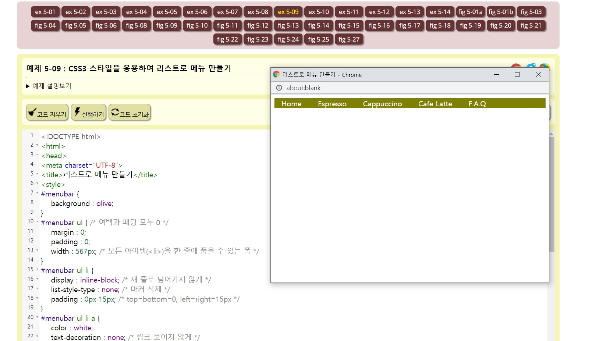
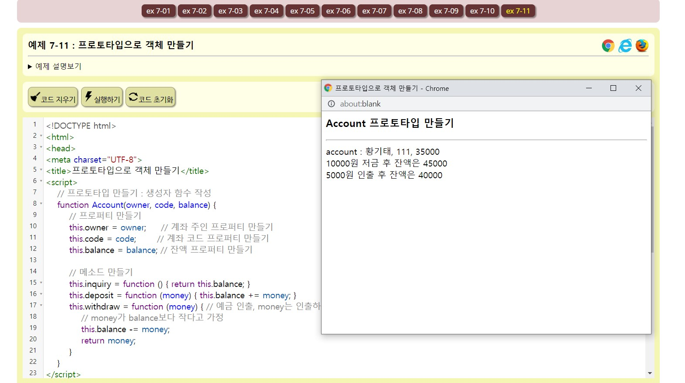

Hanjo Homepage
HTML이란? HTML은 프로그래밍 언어로 웹 페이지를 만들 때 사용됩니다. 웹 사이트들이 모두 HTML을 사용하여 만들어집니다. HTML의 의미와 특징 HTML은 Hyper Text Markup Language의 줄임말입니다. Hyper Text는 단순한 텍스트를 넘어서 웹 페이지의 특정 부분과 연결할 수 있는 기능을 가진 텍스트 즉, 링크를 의미합니다. Markup Language는 프로그래밍 언어의 한 종류로 정보를 구조적, 계층적으로 표현 가능하다는 특징이 있습니다. HTML은 파일 확장자로 .html을 쓰며, 그 파일 안에 html 코드를 작성하게 됩니다. HTML의 역사 HTML은 1990년대 영국의 물리학자 팀 버너스리가 제안하여 개발되었습니다. 초기 개발 목적은 연구소의 연구원들이 신속하게 정보와 문서를 공유하기 위해서였습니다. 현재의 웹은 문서의 형태는 아니지만, 정보를 공유한다는 목적은 여전히 같습니다.

